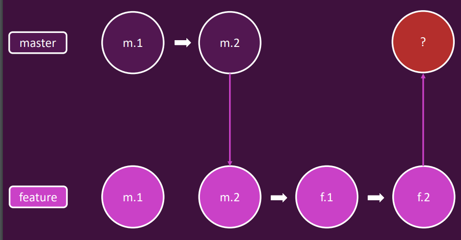
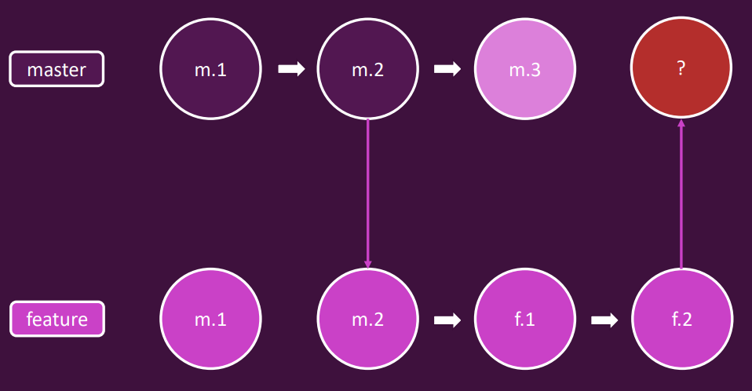

Git Operations#
Git Repo -> Staging Area + Commit Folder
Git Configurations
git config --global user.name "revanna7226"
git config user.name
git config --global user.email "revanna@email.com"
git config --list
git remote add <repo_name>/origin <repo_url>
Turn a directory into git repository or make directory managed by git.
git init
To explore our commit history with git log. To exit this menu, please press “q” and confirm this with Enter on your keyboard.
git log
git log --one-line
To Switch to specific commit
# shows the commit history
git log
# take a commit id from the logs and use in the below command.
git checkout <commit_id>
# to switch back to branch
git checkout master
Deleting working directory files
# this command deletes the file and stages for commit.
# this equal to (manual delete + git add )
git rm <files/folder>
Undoing or revert unstaged changes
# to undo perticular file
git checkout <file>
# recommanded
git restore <file>
# to undo all changes which are unstaged
git checkout .
# recommanded
git restore .
Delete untracked files
# this lists all files which are untracked and picked up for delete
# flags: d delete, n list
git clean -dn
# this deletes all untracked files
# flags: d delete, f force
git clean -df
Undoing or reverting staged changes
# unstage single or all files
git reset <file>
git reset .
# revert a file or all files
git restore <file>
git restore .
Deleting or undo commits with git reset
# delete last one commit and stay changes in staged area
git reset --soft HEAD~1
# delete last commit and remove all files permanently
git reset --hard HEAD~1
Commmands to see which are files are tracking by git
git ls-files
Deleting a branch
# only if it has already been fully merged into its upstream branch
git branch -d <branch>
# force deletes the branch, regardless of its merge status
git branch -D <branch-name> [<branch-name>]
Committing detached HEAD changes
git log
# checkout to any commit
git checkout <commit-hash>
# do some changes
git add .
git commit -m 'commit message'
# you are in detached head
git branch
# create a new branch for detached head
git branch detached-head
git switch master
git merge detached-head
git branch -D detached-head
bringing lost data back with git reflog
A log of all project changes made including deleted commits
# deletes last commit changes and files
git reset --hard HEAD~1
# shows the activity of git operations done in the repo
git reflog
# use hex id of the last commit in the reflog activity list
git reset --hard <hash-code>
# --- delete branch and restore
# create a branch, do some changes and commit all the changes.
# delete the branch
git branch -D <branch-name>
# get activity list
git reflog
# checkout to last commit of the branch, you will be in the detached HEAD
git checkout <hash-code>
# create new branch for detached head changes
git switch -c <branch>
git status is used to list all new or modified files that haven’t yet been committed
git status
git add <file-name> to update what will be committed or staged
# stage a single file, or multile files by separating file names by comma
git add <file-name>
git add <file1>,<file2>
# stage all changes at once shot
git add *
Unstage staged files
# unstage single file
git restore --staged <file>
# unstage all files
git restore --staged .
git commit -m “write commit message” is used to commit changes
git commit -m "write commit message"
git push origin main is used to push the project to GitHub main branch
git push origin main
git branch shows branches present in this repository and also we can see which is the active branch indicated by asterisk.
# lists local branches
git branch
# lists local branches and remote tracking branches
git branch -a
# lists remote branches available
git ls-remote
# git create local-tracking branch and
git clone <url> <new-folder-name> used to clone the project
# clone master branch to local
git clone <url> <new-folder-name>
# clone a perticular branch to local
git clone -b <branch> <repo-url> <new-folder-name>
git branch <new-branch-name> used to create new branch
git branch <new-branch-name>
git checkout <branch-name> used to switch from one branch to another branch
# switch to existing branch
git checkout <branch-name>
# Aletrnative
git switch <branch-name>
# create new branch and switch to it
git checkout -b <branch-name>
# Aletrnative
git switch -c <branch-name>
git diff compare the changes
git diff
Use git stash when you want to record the current state of the working directory and the index, but want to go back to a clean working directory. https://git-scm.com/docs/git-stash
Temporary storage for unstaged and uncommitted changes
# push the intermediate changes with index reference
git stash
# push the intermediate changes with a message
git stash push -m "message to temp save"
# to check for all the stashes
git stash list
# to load a perticular changes use index to load
git stash apply <stash-index>
# to load a perticular changes with index and drop the stash
git stash pop <stash-index>
# to remove a stash with an index
git stash drop <stash-index>
# need to check what is it
git stash clear
Understanding Merge Types#
Combining commits from different branches by creating a new merge commit (recursive) or by moving the HEAD (fast-forward)
There are two types of merge mainly we use in our day to day activities.
1. Fast-Forward#
Only possible when there are no commits in the master after feature branch was created.
Merge moves HEAD forward but does not create new commit.
git branch
# master
# feature
# switch to master branch and run merge command
git merge feature
# no commits required
If you don’t want to have intermediate commits which is done in the feature branch do SQUASH commit.
Explicite commit is required here for merge action.
# squashes all the commits and adds the whole changes done in the feature to staging
git merge --squash feature
# commit the changes with appropriate message
git commit -m 'merged feature with master: feature -- is added'
master -> m1 m2 merged(HEAD, master)
2. Non Fast-Forward#
Additional commits in both master and feature branch after fetaure branch was created
Additional (merge) commit is created in master branch
There are four types of Non Fast-Forward merge
Recursive -> mainly used
# explicitely mentioning --no-ff
git merge --no-ff feature
# below command applies recursive non fast forward
# when there are commits in master after feature was created
git merge feature
git merge --squash feature
Octopus
Ours
Subtree
3. Rebase#
Change the base (i.e. the parent commit) of commits in another branch
m3 becomes new base commit for commit created in feature branch.
rebase master to feature branch
merge rebase feature into master
Warning
rebase does not move commits instead it creates new commits.
Never rebase commits outside your repository.
Remember: Rebasing re-writes code history!
# switch to feature
git switch feature
# run rebase in feature branch
git rebase master
When to Apply Rebase?
New commits in master branch while working in feature branch
Feature relies on additional commits in master branch
Rebase master into feature branch
—
Feature is finished – Implementation into master without merge commit
Rebase master into feature + (fast-forward) merge feature into master
Handling Merge Conflicts#
git merge feature
# when conflicts occurs, we need to resolves the conflicts and commit
# other wise wwe can abort the merge
git merge --abort
# which shows the commits which are have merge conflicts
git log --merge
Cherry Pick#
Copy commit including the changes made only in this commit as HEAD to other branch
# commit hash code from another branch
git cherry-pick <commit-hash>
Merge (non fast-forward) |
Rebase |
Cherry-Pick |
|---|---|---|
Create merge commit |
Change single commit‘s parent |
Add specific commit to branch (HEAD) |
New commit |
New commit ID(s) |
Copies commit with new ID |
Understanding Tagging#
# to add tag
git tag <version_1.0> <commit_hash>
# to list tags
git tag
# to show tags info
git show 1.0
# checkout to tag
git checkout 1.0